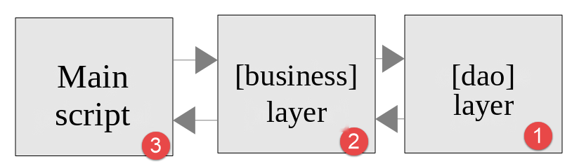

10. Aplicações em camadas
10.1. Introdução
Os scripts deste capítulo estão na pasta [scripts-console/three-layers]:
Vamos agora explorar como estruturar uma aplicação PHP em camadas:

Neste diagrama, a camada da esquerda inicia o uso da camada da direita. Os papéis das camadas são os seguintes:
- [1]: a camada chamada [dao] (Data Access Objects) trata das interações com os repositórios de dados externos [4] (arquivos, bancos de dados, serviços web etc.). Essa camada às vezes é chamada de [DAL] (Data Access Layer), um termo que descreve melhor seu papel. Essa camada pode ler dados de [3] ou gravar dados em [2]. Ela é chamada pela camada [business] [6] e devolve resultados [7] a ela;
- [5]: uma camada chamada [business] que reúne os procedimentos “de negócio” e recebe todos os dados de que eles precisam. Em geral, é a camada mais estável de um projeto, pois não depende da forma como os dados são obtidos. Os dados vêm de duas fontes:
- [9]: dados fornecidos pelo script PHP;
- [6, 7]: dados solicitados à camada [dao];
- [8]: o script principal atua como orquestrador. Em uma aplicação de console, ele irá:
- criar as camadas [business] e [dao];
- executar o algoritmo da aplicação. Esse algoritmo funciona como um orquestrador: não contém “lógica de negócio” nem código de acesso a dados. O script principal limita-se a chamar os procedimentos da camada [business] [9]. Ele ignora completamente a camada [dao] e os dados externos. Ele pode fornecer dados [9] à camada [business]. Em uma aplicação de console, esses dados podem vir de arquivos de configuração ou do usuário do script. Ele recebe resultados [10] da camada [business]. Pode ser necessário armazenar certos resultados: para isso, ele usa novamente os procedimentos da camada [business], que por sua vez chamará a camada [dao] para realizar a tarefa;
- Entre os resultados, o script principal pode receber exceções. É papel do script principal tratar as exceções propagadas por todas as camadas.
Essa arquitetura em camadas foi concebida para facilitar a evolução da aplicação. Para isso, cada camada implementa uma interface. Suponha que:
- a camada [dao] seja implementada por uma classe [Dao], que implementa uma interface [IDao];
- a camada [business] seja implementada por uma classe [Business], que implementa uma interface [IBusiness].
Os procedimentos da camada [business] usarão então a interface [IDao] em vez da classe [Dao]. Isso permite atualizar a camada [dao] sem afetar a camada [business]. Suponha que, na versão 1, a camada [Dao1] use dados de um banco de dados. Após uma atualização, esses dados passam a ser fornecidos por um serviço web na versão 2, [Dao2]. Garantiremos que as duas classes, [Dao1] e [Dao2], implementem a mesma interface, [IDao], e lancem as mesmas exceções. Se isso for verificado, a camada [Business], que trabalha com a interface [IDao], permanecerá inalterada.
O mesmo raciocínio vale para a camada [business].
A aplicação implementará a seguinte estrutura em camadas:

10.2. Objetos trocados entre as camadas
Normalmente, as camadas trocam objetos variados. Aqui, elas trocarão objetos da seguinte classe [Person]: [Person.php]:
Comentários
- linha 6: os objetos trocados entre as camadas contêm apenas dados. Eles são tornados imutáveis (classe [readonly]): isso impede que uma camada modifique inadvertidamente um objeto recebido de outra camada;
- linha 9: a pessoa tem um único atributo, seu identificador [$id], inicializado pelo construtor por meio de promoção de parâmetros. Vamos supor que esse identificador designe uma pessoa única em um repositório de dados;
- Linhas 14–17: o método [__toString], que exibe o identificador da pessoa.
10.3. Camada [dao]
A interface [IDao] implementada pela camada [dao] é a seguinte: [IDao.php]:
Essa interface é implementada pela seguinte classe [Dao1]: [Dao1.php]:
Comentários
- Linha 5: a classe [Dao1] implementa a interface [IDao]. Ela é declarada como [final]: não se pretende derivá-la;
- a classe não interage com um repositório de dados. Ela apenas exibe mensagens para acompanhar a execução do código (linha 11, linha 18);
- linha 8: o atributo [#[\Override]] indica que o método implementa um método da interface. Se o nome do método estiver incorreto, o PHP sinaliza o erro;
- linha 19: de fato, retornamos uma pessoa com o identificador passado como parâmetro ao método.
Implementamos também a interface [IDao] com a seguinte classe [Dao2], [Dao2.php]:
A classe [Dao2] é semelhante à classe [Dao1], exceto que modificamos as mensagens exibidas.
10.4. Camada [business]
A camada [business] fornece a seguinte interface [IBusiness]: [IBusiness.php]:
Comentários
- Linha 6: a interface [IBusiness] estende a interface [IDao]. Isso não é de forma alguma obrigatório. Fazemos isso aqui porque o exemplo é simples: a camada [business] fornece ao script principal os métodos [get] e [save] da camada [dao], que ela oculta do script principal;
- Linha 9: o método [doSomething] é específico da camada [business].
O curso de PHP 7 usava a interface [IMétier] e a classe [Métier], com acento. O PHP permite letras acentuadas em identificadores, mas um arquivo chamado [Métier.php] causa problemas com certas ferramentas (arquivos ZIP, sistemas de arquivos, carregamento automático de classes). Agora nos limitamos a nomes de classes e arquivos sem acentos: aqui, [IBusiness] e [Business].
A interface [IBusiness] é implementada pela seguinte classe: [Business] [Business.php]:
Comentários
- Linha 8: a camada [business] deve ter uma referência à camada [dao] para poder usar os métodos desta. Essa referência é passada a ela pelo construtor e armazenada no atributo privado e somente leitura [$dao] (promoção de parâmetros). Observe que o tipo do parâmetro é a interface [IDao]. Assim, a camada [business] poderá trabalhar com qualquer classe que implemente a interface [IDao]. Se passarmos de uma camada [Dao1] para uma camada [Dao2], e ambas implementarem a interface [IDao], a camada [business] não precisará ser reescrita;
- essa técnica é chamada de injeção de dependência por construtor: a classe [Business] não cria a camada [dao] da qual depende; em vez disso, ela lhe é fornecida. O curso de PHP 7 usava um setter [setDao]. A injeção por construtor é agora a norma: um objeto [Business] não pode existir sem sua camada [dao], e essa camada não pode ser alterada depois (atributo [readonly]). Essa também é a abordagem adotada por frameworks como Symfony ou Laravel;
- linhas 14–18: implementação de [IBusiness::doSomething];
- linhas 22–27: implementação de [IBusiness::save]. Esse método deve gravar uma pessoa em um repositório de dados. A camada [business] não consegue fazer isso. Ela recorre à camada [dao] para realizar essa gravação (linha 26);
- linhas 31–36: implementação de [IBusiness::get]. Esse método deve recuperar de um repositório de dados a pessoa cujo identificador lhe é passado como parâmetro. A camada [business] não consegue fazer isso. Ela recorre à camada [dao] para realizar a tarefa (linha 35).
Conclusão: sempre que a camada [business] precisar acessar dados armazenados no repositório de dados, ela deve passar pela camada [dao], criada especificamente para acessar esses dados.
10.5. Script principal
Escreveremos dois scripts de orquestração para essa aplicação. O primeiro, [main1.php], usará a camada [Dao1], enquanto o segundo, [main2.php], usará a camada [Dao2]. Queremos mostrar que isso não tem nenhum impacto sobre o código da camada [Business].
O script [main1.php] é o seguinte:
Comentários
- O script [main1.php] atua como orquestrador da aplicação. Ele carrega os arquivos de classes e interfaces (linhas 7–11), cria a estrutura em camadas da aplicação (linha 14) e depois se comunica com a camada [business] (linhas 16–18);
- linha 14: é aqui, e somente aqui, que se escolhe a implementação da camada [dao];
- Segundo o diagrama da estrutura em camadas, o script [main1.php] deve se comunicar apenas com a camada [business]. Ele não deve se comunicar com a camada [dao], embora isso seja teoricamente possível.
Os resultados da execução são os seguintes:
Comentários
- A linha 16 do código fez com que as linhas 2 e 3 dos resultados fossem escritas;
- A linha 17 do código fez com que a linha 4 dos resultados fosse escrita;
- A linha 18 do código fez com que as linhas 5 e 6 dos resultados fossem escritas.
O script [main2.php] é o seguinte:
Comentários
- Linhas 10 e 14: a estrutura de camadas agora usa a camada [Dao2]. Essas são as únicas diferenças em relação a [main1.php].
Os resultados da execução são os seguintes:
A camada [Dao1] simula o acesso a um banco de dados local, enquanto a camada [Dao2] simula o acesso a um banco de dados remoto. Desde que essas duas camadas respeitem a interface [IDao], vemos que o código da camada [Business] não precisou ser alterado.
Vamos aplicar o que acabamos de aprender ao exercício de cálculo de imposto que serve de exemplo condutor.